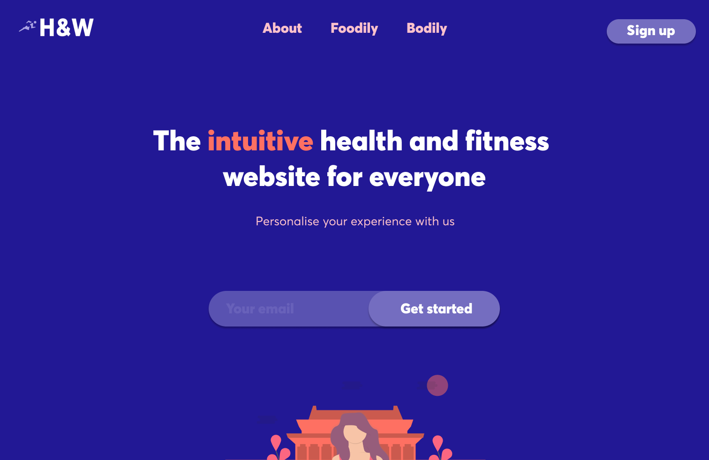
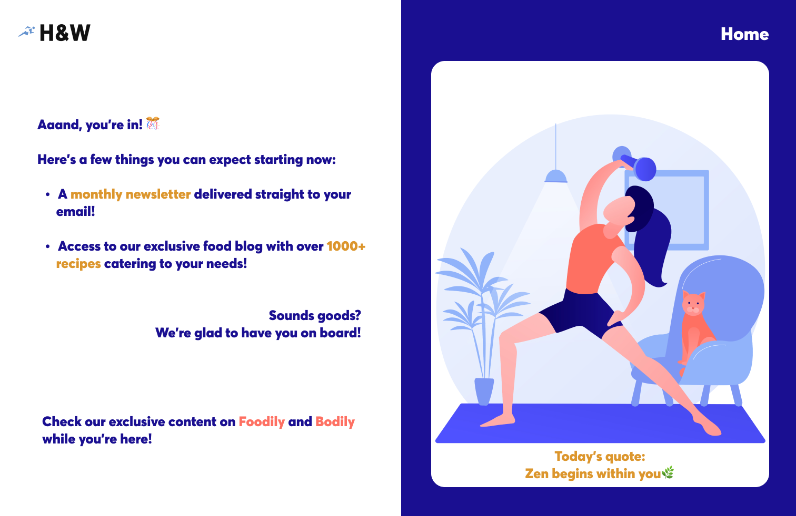
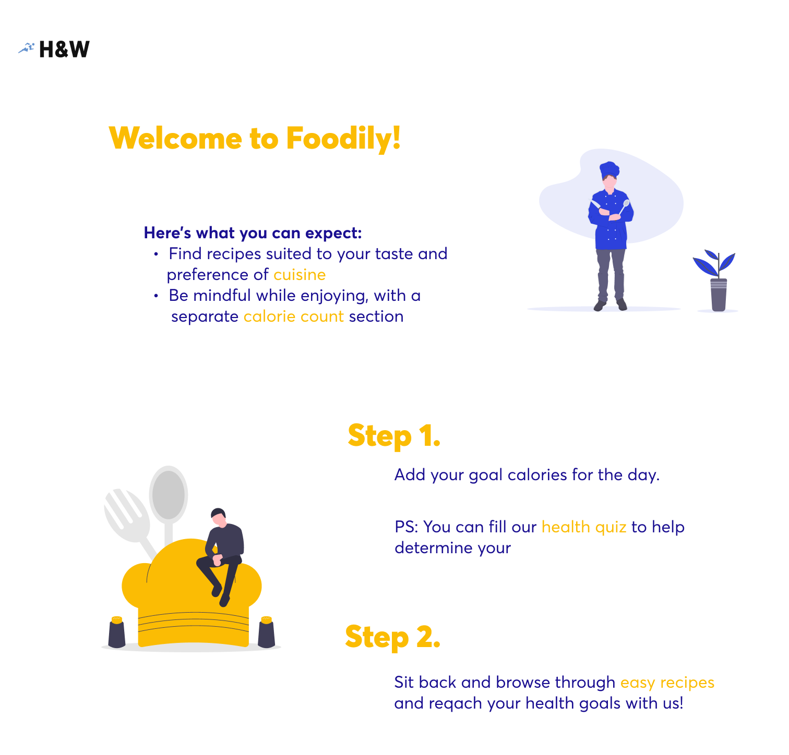
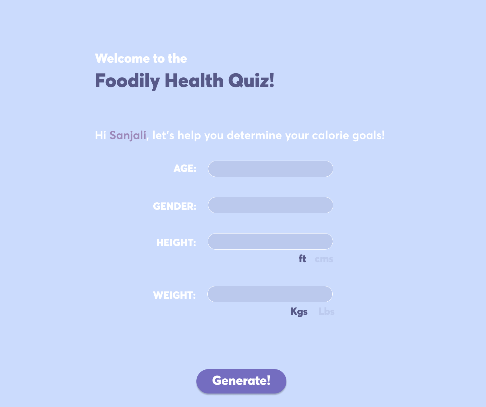

The youth in their twenties often miss their health in their peak years. This blog in particular helps in creating awareness and keeps a track of health and mental well-being.
Discover: Problem
Insight: Features of the application
Design: Objective of the application
Web design process
Design: High Fidelity Designs

Discover - Problem
In today’s hectic world, new graduates in their early twenties are forget to keep track of their health. The implications of their negligence aren’t visible for the initial years, but soon take a toll of their lives.
Lack of awareness:
There’s a lack of awareness among young adults to prioritise their health from the get-go.
Lack of discipline:
Since the repercussions aren’t visible immediately, there’s no urgency to be disciplined in taking care of their health.

Insight - Features
Based on the problems discovered, the following features can be incorporated into the website, to ensure the website meets the needs of the users:
Animated calendar: to track daily workout, medications, sleep, etc.
Fitness: Video library (across a plethora of domains: HIIT, Yoga, Meditation, etc.)
Food: Blog posts on recipes (Ingredient list maker), easy recipe saving.
Calorie tracking on food consumption
Maps: Gyms, fitness centers near you, doctors near you, therapists near you.
Define - Objective
Defining the Health in Time website? This website serves as a blog. It highlights the importance of physical and mental well-being, by showing guided meditation, regular blog posts, a calorie counter to show how many calories should be consumed based on your goals, etc. It spreads awareness among young adults to take care of health.
Defining target audience?Target audience consists of young adults in their twenties. Individuals looking to get into health and fitness enthusiasts, becoming mindful of their nutrition, looking to increase their productivity levels and organising their daily life.
What are the major objectives we want to accomplish with our website?
I decided to provide a streamlined approach to boost daily productivity of the college students with the help of features necessary for holistic development. These features not only help young adults become aware of methods to take care of their health but also promote the mentality of prevention is better than cure.
What services do we want to offer to our customers? Personalised account (user login/sign up) to save, bookmark items on the website, and receive recommended content.
High fidelity designs
Home Screen:This is a scroll based home screen of the Health in Time website.
Here, the option of signing up for a newsletter, with a brief introduction about the website.
Food Blog:I designed a food blog (Foodily), with recipes catering to the needs entered by the user. Based on different factors such as calories, dietary preferences, etc.
With the wave of awareness of gut health and its positive impact on factors such as brain working, skincare, healthcare, etc, young adults have become more aware of how eating well can impact their life.
For this reason, having a food blog that displays quick and easy recipes according to their goals and dietary preferences.

Calorie Calculator:A calorie calculator, to help keep track of the calories that can be consumed based on individual goals.
Input fields are taken the output is the ideal no. of calories that can be consumed.
For instance, if a person wishes to gain muscle, they must consume a large number of calories in comparison to the calories they burn, in order to stay in a calorie surplus.

Fitness Blog:I also thought of including a fitness blog (Bodily), that displays workout plans catering to the needs of the user. Today’s youth prefers reading articles and watching curated videos that can help them achieve their goals.
With the help of this, the users could find a variety of workouts, such as, HIIT (High intensity interval training), Pilates, etc, all under one blog.